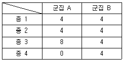
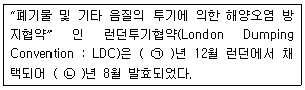
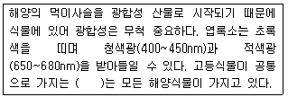
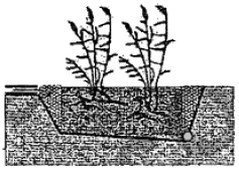
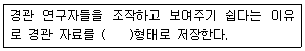
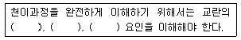
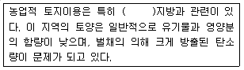
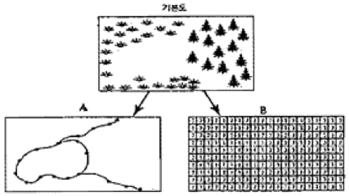
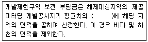
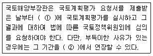

자연생태복원기사(구) (2013-03-10 기출문제)
1과목: 환경생태학개론
1. 다음 군집 A, B의 종다양성의 Shannon지수 값은? (단, 계산의 log의 밑을 2로 하고(log2), 표안의 수치는 각 군집에 속하는 종의 관찰 개체수이다.)

- 군집 A : 2, 군집 B : 1.5
- 군집 A : 4, 군집 B : 2
- 군집 A : 2, 군집 B : 4
- 군집 A : 1.5, 군집 B : 2
(정답률: 70%)

2. 다음 중 유네스코 생물권 보전지역을 지정할 때 사용되는 개념이 아닌 것은?
- 중요자연자본
- 핵심지역
- 전지지역
- 완충지역
(정답률: 75%)
3. 영양염류 중 미량원소가 아닌 것은?
- Fe
- Mo
- Co
- Ca
(정답률: 62%)
4. 다음 설명의 ( )안에 들어갈 연도는?

- ㉠ 1970, ㉡ 1972
- ㉠ 1972, ㉡ 1975
- ㉠ 1975, ㉡ 1978
- ㉠ 1978, ㉡ 1985
(정답률: 79%)
5. 수환경 오염에 있어서 수서곤충을 이용한 수환경 평가의 장점이 아닌 것은?
- 오염된 종류에 따라 다른 반응성에 빠른 반응
- 복잡한 생활사로 계절적으로 상이한 결과 도출 가능성
- 일반적으로 넓은 분포로 채집의 용이성
- 대부분 저서성으로 이동성이 적음
(정답률: 78%)
6. 한 종이 속하는 생물이 온도, 지형 등 다른 지역에 적응하여 생활하면서 생긴 유전적인 차이가 생태적으로 유의하게 나타나는 개체군에 대한 설명으로 적합한 것은?
- 생리형
- 형태형
- 생육형
- 생태형
(정답률: 83%)
7. 농약을 사용하지 않는 해충구제 방법에 해당되지 않는 것은?
- 생물학적 조절
- 유전적 조절
- 호르몬과 페로몬 이용법
- 유기안의 살포
(정답률: 80%)
8. 다음 중 안정적인 수자원 확보를 위한 정책의 핵심은?
- 환경 관련 예산 축소
- 축산업 장려
- 수처리 관련시설 건설
- 비점오염원 증대
(정답률: 70%)
9. 지구자전, 해류의 흐름, 지형 등의 요인으로 저층의 수괴가 상층으로 유입되어 형성되며 생산력이 높은 어장이 발생하는 특징을 가지고 있는 것은?
- 저탁류(turbiidity current)
- 원심력(centrifugal force)
- 용승류(upwelling)
- 적도해류(Equatorial current)
(정답률: 82%)
10. 바다와 강이 만나는 곳에는 생물다양성과 생산성이 매우 높다. 이러한 곳에 형성되는 서식처로 해수와 담수가 합해지는 지점에 나타나는 습지는?
- 저층습지
- 담수습지
- 기수습지
- 염수습지
(정답률: 58%)
11. 다음 두 가지 생물의 관계에서 편리공생(commensalism)의 예에 해당하는 것은?
- 콩과식물과 뿌리혹박테리아
- 개미와 아카시아
- 리기테메다소나무와 균근
- 열대우림과 난초류
(정답률: 65%)
12. 육상 생물군계에 있어서 환경의 연평균 강우량을 낮은 곳에서 높은 곳으로 나열한 것은?
- 사막 → 초원 → 낙엽수림 → 열대우림
- 낙엽수림 → 침엽수림 → 툰드라 → 열대우림
- 사막 → 초원 → 침엽수림 → 툰드라
- 낙엽수림 → 툰드라 → 초원 → 열대우림
(정답률: 83%)
13. 우리나라 남해 해수에 고농도로 존재하여 고둥류의 성비를 전환시킨 환경호르몬은?
- DDT
- TBT
- PCB
- DNA
(정답률: 50%)
14. 어떤 주어진 장소와 시간에 서식하는 모든 개체군을 총칭하는 용어는?
- 생물권
- 군집
- 생태계
- 생물군계
(정답률: 78%)
15. 생물종 다양성이 감소하는 원인에 해당하지 않는 것은?
- 인구의 증가, 오염, 외래종의 유입
- 남용, 오염, 서식지의 물리적 변화
- 서식지의 파괴, 습지의 보전, 토종의 유지
- 인구의 증가, 외래종의 유입, 서식지의 외형적 변화
(정답률: 93%)
16. 다음 중 ‘하구습지’의 설명으로 옳은 것은?
- 강이나 하천으로부터 흘러나오는 담수가 해안지역을 따라서 바다의 염수와 섞이는 지역에 형성되는 습지를 말한다.
- 바닷물의 영향을 받는 곳으로 갯벌이나 해수욕장 등을 말한다.
- 항상 물이 고여 있는 습지로서 면적이 8ha 이상이며, 저수지, 호수 등이 이 유형에 속한다.
- 이탄습지나 늪지와 같이 비교적 작은 면적의 습지로서 일년 중 일정 기간 동안은 말라있는 경우도 있다.
(정답률: 77%)
17. 생물군집 내의 여러 종의 개체군들 사이에는 식물을 근원으로 하는 일련의 수직적인 관계-포식과 피식 등의 관계를 맺고 있는데, 이를 먹이사슬 또는 먹이연쇄라 한다. 1927년 이 용어를 처음 사용한 사람은?
- Forbes
- Lindemann
- Tansley
- Elton
(정답률: 85%)
18. 자연계에서 개체군이 집단으로 분포하는 원인이 아닌 것은?
- 지리적 생활장소 차이
- 계절적 변화
- 종간경쟁
- 생식방식
(정답률: 50%)
19. 맑은 날 숲 속에서 CO2의 농도가 가장 낮은 시간대는?
- 낮 12경
- 오후 6시경
- 오전 6시경
- 밤 12경
(정답률: 72%)
20. 다음 설명의 ( )에 들어갈 용어는?

- 엽록소 a
- 엽록소 b
- 엽록소 c
- 엽록소 e
(정답률: 85%)
2과목: 환경계획학
21. 개발제한구역 1등급 대상 지역의 환경성 평가 항목 및 기준으로 적합하지 않는 것은?
- 표고 : 160cm
- 경사도 : 35° 초과
- 수질 : 18점 이상
- 농업적성도 : 매우 낮은 생산성 지역
(정답률: 60%)
22. 재생가능한 자연자원이 지속할 수 있는 유기체의 최대규모에 해당하는 것은?
- 환경효율
- 환경수용능력
- 환경유인력
- 종다양성
(정답률: 75%)
23. 환경부장관이 생태ㆍ경관보전지역안에서 자연생태 또는 자연경관 훼손행위를 한 사람에 대하여 조치할 수 있는 행위가 아닌 것은?
- 원상회복
- 행위의 중지
- 고발 및 동일 면적의 토지 납부
- 원상회복이 불가능시 대체자연의 조성
(정답률: 67%)
24. 환경친화적 택지개발의 설명에 해당되지 않는 것은?
- 지구환경의 보전
- 인간과 자연 상호에 유익함 제공
- 토지자원절약을 통한 효율성 제공
- 단지개발시 자연보존 문제를 동시적으로 고려
(정답률: 70%)
25. 생태네트워크의 개념으로 가장 적당한 것은?
- 개별적인 서식처와 생물종을 목적으로 하지 않고, 지역적인 맥락에서 모든 서식처와 생물종의 보전을 목적으로 하는 공간상의 계획이다.
- 지역적인 서식처와 개별적인 생물종을 목적으로 코리더에 의하여 핵심지역과 완충지역을 서로 연결하는 공간상의 계획이다.
- 개별적인 서식처와 생물종을 목적으로 하지 않고, 지역적인 맥락에서 특정 서식처와 생물종의 보전을 목적으로 하는 공간상의 계획이다.
- 지역적인 서식처와 생물종 보다는 개별적인 서식처와 생물종을 목적으로 코리더에 의하여 핵심지역과 완충지역을 서로 연결하는 공간상의 계획이다.
(정답률: 48%)
26. 현재 작성된 국토환경성 평가지도의 축척은?
- 1:5000
- 1:10000
- 1:25000
- 1:50000
(정답률: 82%)
27. 지속가능한 개발원칙에 해당하지 않는 것은?
- 미래성
- 시민참여
- 형평성
- 정치안정
(정답률: 80%)
28. 사전환경성검토에서 보다는 환경영향평가에서 주로 다루는 내용에 해당되는 것은?
- 입지의 타당성에 대한 평가
- 부문별 계획 전반에 대한 정책영향평가
- 환경적 영향예측 및 저감방안 수립
- 제안된 행정계획 등에 대하여 환경정책과의 조화성 분석
(정답률: 65%)
29. 산ㆍ하천ㆍ내륙습지ㆍ호소(湖沼)ㆍ농지ㆍ도시 등에 대하여 자연환경을 생태적 가치, 자연성, 경관적 가치 등에 따라 등급화하여 작성된 지도는?
- 녹지자연도
- 생태ㆍ자연도
- 산지이용도
- 습지보호지역도
(정답률: 67%)
30. 다음 대기오염물질 중 2차 오염결과로 발생되는 것은?
- SO23
- O3
- CO2
- CO
(정답률: 62%)
31. 다음 지방의 제21은 지향성을 나열한 것 중 옳지 않은 것은?
- 지속가능한 개발(sustainable development)
- 파트너쉽(partnership)
- 지방가치(local community based issues)
- 지역통합(regional intergration)
(정답률: 60%)
32. 도시공원 및 녹지 등에 관한 법률에 의하면, 특별시장ㆍ광역시장ㆍ특별자치시장ㆍ특별자치도지사 또는 대통령령으로 정하는 시의 시장은 관할구역의 도시지역에 대하여 공원녹지의 확충ㆍ관리ㆍ이용방향을 종합적으로 제시하는 ‘공원녹지기본계획’을 몇 년 단위로 수립하여야 하는가?
- 5년
- 10년
- 15년
- 20년
(정답률: 82%)
33. 습지보호지역에 자연경관영향의 협의대상이 되는 거리는 경게로부터 얼마를 기준으로 하는가? (단, 일반기준을 적용한다.)
- 300m
- 500m
- 1000m
- 1500m
(정답률: 45%)
34. 다음 중 자연환경보전기본방침 중 생태계 보전과 단절되고 훼손된 생태계복원을 위한 세부내용으로 가장 거리가 먼 것은?
- 지역특성을 고려한 생태계보전
- 전국의 생태벨트 조성
- 자연자원의 지속적 사용
- 훼손된 지역의 조사와 생태계복원
(정답률: 62%)
35. UNESCO에 의한 인간과 생물권 계획에 의한 보호지역 중 생태계의 훼손이 원칙적으로 허용되지 않는 지역은?
- 핵심지역
- 완충지대
- 전이지역
- 생태보전지역
(정답률: 50%)
36. 국토의 계획 및 이용에 관한 법률상 도시ㆍ군관리계획의 입안을 위한 기초조사에서 국토해양부장관이 정하는 바에 따라 실시하는 토지의 토양, 입지, 활용가능성 등을 평가하는 제도는?
- 토지의 적성에 대한 평가
- 도시관리계획 환경성 검토
- 사전 환경성 검토
- 토지 활용성 평가
(정답률: 78%)
37. 하천의 기능 중 치수기능에 대한 설명으로 옳은 것은?
- 생물의 서식처 기능
- 수질의 지정기능
- 상업ㆍ농업ㆍ공업용수 등과 같은 물을 이용하는 기능
- 하천주변에 인간이 정주하는 한 항상 대비해야 하는 기능
(정답률: 50%)
38. 생태환경 복원ㆍ녹화의 목적을 달성하기 위해서는 식물군락이 갖는 환경 개선력을 살린 기술이 기본이 되어야 한다. 다음 중 그것과 거리가 먼 것은?
- 자연군락의 종다양성을 고려하여야 한다.
- 자연회복을 도와주도록 하여야 한다.
- 자연의 군락을 재생ㆍ창조하여야 한다.
- 자연에 가까운 방법으로 군락을 재생하여야 한다.
(정답률: 40%)
39. 관한구역의 면적 및 인구규모, 용도지역의 특성 등을 감안하여 대통령령이 정하는 기준에 따라 특별시ㆍ광역시ㆍ특별자치시ㆍ특별자치도ㆍ시 또는 군의 도시ㆍ군계획조례로 정하도록 하고 있는, 용도지역안에서의 건폐율의 최대한도가 모두 맞는 것은?
- 제1종전용주거지역 : 70%, 계획관리지역 : 50%
- 일반상업지역 : 90%, 생산관리지역 : 30%
- 전용공업지역 : 70%, 농림지역 : 20%
- 생산녹지지역 : 30%, 생산관리지역 : 30%
(정답률: 66%)
40. 다음 중 도시열섬의 해결책으로 적당하지 않은 것은?
- 지분과 도로에 밝은 색을 사용하는 등 포장재료를 열반사율이 높은 것으로 교체하는 것이다.
- 수목식재를 통해 도시의 기온을 낮추고 대기 중의 이산화탄소를 줄이도록 한다.
- 수목식재를 통해 나무가 땅속의 지하수를 흡수하여 나뭇잎의 증산작용을 통해 직접적으로 주변공기를 시원하게 한다.
- 비용이 적게 들고 내구성이 강한 아스팔트 포장을 권장한다.
(정답률: 81%)
3과목: 생태복원공학
41. 해안침식 방지를 위해서 1차적으로 실행해야 하는 사업은?
- 방파제
- 해안지 옹벽 또는 석축
- 초류식재
- 말옥박기공법
(정답률: 58%)
42. 자연형 하천복원 시 저수로의 수층부 호안에 적함한 공법이 아닌 것은?
- 돌심기 공법
- 돌망태 공법
- 사석돌망태 공법
- 사석버드나무섶단 공법
(정답률: 46%)
43. 수질 및 수생태계 상태별 생물학적 특성 이해표에서 생물 등급 “매우좋음~좋음”에 해당되는 저서생물 지표종은? (단, 환경정책기본법 시행령을 적용한다.)
- 물달팽이
- 민하루살이
- 강하루살이
- 붉은깔다구
(정답률: 43%)
44. 다음 중 초지의 식생관리방법 중에서 동일한 식생의 상태를 계속적으로 관리하는데 가장 생력적이고, 효과적인 방법은?
- 예취
- 소각
- 제초
- 사비
(정답률: 56%)
45. 다음 중 암반노출 비탈면에 가장 적합한 녹화공법은?
- 식생매트공법
- 식생구멍심기
- 식생기반재 뿜어붙이기
- 종자뿜어붙이기
(정답률: 56%)
46. 다음 중 내륙습지의 종류가 아닌 것은?
- 호수
- 늪
- 소택지
- 갯벌
(정답률: 60%)
47. 대부분의 수목이 정상적으로 생육할 수 있는 수림지의 자연비옥도 조사 항목 중 염기치환용량의 범위에 해당되는 것은?
- 15me/100g 이상
- 7~15me/100g
- 3~7me/100g
- 3me/100g 이하
(정답률: 48%)
48. 토양피복재인 크이어네트(coir net) 및 쥬트네트(jute net)에 대한 설명으로 틀린 것은?
- 코코넛 열매껍질과 황마를 재료로 만들며, 보온, 보습성이 있다.
- 시공이 간편하여 단기간에 많은 면적을 피복할 수 있다.
- 네트나 메쉬 자체가 썩어서 섬유질 비료 역할을 담당하는 장점이 있다.
- 내구력은 2~5년 정도로 경질암비탈면에서 녹화기능이 최대화된다.
(정답률: 65%)
49. 다음 중 반개방적 수림의 특성이 아닌 것은?
- 일정부분 강도 있는 벌채를 시행함
- 되도록 자연림에 가까운 수림을 유지, 형성하는 목적으로 함
- 조릿대나 억새류 등의 지피식율은 잘 자라고, 오랜 세월이 경과하면 풍부한 임상을 기대할 수 있음
- 수목구성은 낙엽수가 대부분이며, 상록수는 종(從)의 관계가 되는 것이 보통임
(정답률: 48%)
50. 대지면적이 100m2이며, 건축물 면적은 50m2, 자연진반녹지가 30m2, 부분포장 면적이 20m2인 경우 생태면적률은? (단, 자연지반녹지의 가중치는 1.0, 부분포장면의 가중치는 0.5로 한다.)
- 20%
- 30%
- 40%
- 50%
(정답률: 60%)
51. 생태연못의 급수, 퇴수, 및 정수시설에 대한 표준시방으로서 틀린 것은?
- 급수구의 높이는 표준수면의 경우보다 높게 한다.
- 퇴수구의 높이는 표준수면의 경우보다 낮게 한다.
- 급수구나 퇴수구는 노출괴지 않게 설치한다.
- 물이 정체하지 않도록 설치한다.
(정답률: 58%)
52. 습지를 이용한 하수정화처리시스템 중 다음 그림은 어느종류의 습지인가?

- 수직적 흐름을 이용하는 습지
- 지표 수평 흐름형 습지
- 수평적 흐름을 이용하는 습지
- 뿌리 부분에서 수평적 흐름을 만들어 배수를 하는 습지
(정답률: 50%)
53. 비탈면 중 경사 61° 이상의 최급경사 암반지역의 특성과 녹화공법 적용에 대한 설명 중 틀린 것은?
- 식생생육이 현저하게 불량하다.
- 초본식물은 쇠퇴가 빠르다.
- 자연적인 식생천이가 용이하다.
- 연암일 경우 낙석과 붕괴 위험이 있다.
(정답률: 66%)
54. Ramsar 습지로 등록되어 있고 천연기념물로 지정되어 있는 대암산용늪은 호소의 종류 중 어느 것에 속하는가?
- 담수호(freshwater lake)
- 늪(swamp)
- 소택지(bog)
- 습원(moor)
(정답률: 68%)
55. 생태계는 공간적으로 일정한 분포 패턴의 질서를 가지고 있다. 이와 같이 반복하여 나타나는 생태계의 출현 패턴을 나타내는 용어는?
- 군집
- 경관
- 추이대
- 천이
(정답률: 44%)
56. 어떤 하천의 수로(유심선)거리가 3km이며, 계곡거리가 1.3km일 경우 만곡도 지수(sinuosity index)와 하천의 종류가 맞게 짝지어진 것은?
- 0.43, 직류하천
- 0.43, 사행하천
- 2.31, 직류하천
- 2.31, 사행하천
(정답률: 48%)
57. 다음 중 성공적인 자연환경복원을 위한 계획 수립시, 생태계 복원원칙에 해당되지 않는 것은?
- 적은 유지비용과 생태적으로 지속가능한 복원방안을 모색함
- 대상지역의 생태적 특성을 존중하여 복원계획을 수립함
- 도입되는 식생은 가능한 조기녹화가 가능한 식생위주로 함
- 다른 지역과 차별화되는 자연적 특성을 우선적으로 고려함
(정답률: 62%)
58. 산성 토양의 개량방법에 대한 설명으로 가장 부적합한 것은?
- 석회 등 염기성 물질을 첨가해 주어야 한다.
- 퇴비, 구비, 녹비 등 유기물을 사용하는 것은 토양 환충능력의 증대, 토양의 물리ㆍ화학적 성질 개선에 효과가 크다.
- 쓰이는 재료에는 석회석 분말, 생석회, 탄산석회, 소석회, 규회석 분말 등이 있다.
- 석회를 많이 사용하여 토양의 pH가 7 이상 되게 하는 것이 가장 좋다.
(정답률: 65%)
59. 생태네트워크 계획의 과정이 바르게 나열된 것은?
- 조사 → 분석ㆍ평가 → 계획
- 조사 → 분석 → 계획 → 평가
- 분석ㆍ평가 → 조사 → 계획
- 분석ㆍ평가 → 계획 → 조사
(정답률: 55%)
60. 다음 중 일반적인 산림토양의 단면을 가장 바르게 표현한 것은? (단, A : 용탈층, B : 집적층, C : 모재층, F : 발효층, H : 부식층, L :낙엽층)
- L층 → H층 → F층 → A층 → B층 → C층 → 모양
- L층 → F층 → H층 → A층 → B층 → C층 → 모양
- L층 → H층 → F층 → B층 → A층 → C층 → 모양
- L층 → F층 → H층 → B층 → A층 → C층 → 모양
(정답률: 55%)
4과목: 경관생태학
61. 서식처가 파편화된 초기에 일시적으로 일어나는 현상으로 한 패치에 많은 개체들이 수용능력 이상으로 모여들 경우 자원에 대한 경쟁이 치열해서 개체군의 밀도가 낮아지는 효과를 무엇이라 하는가?
- 초기배재 효과
- 혼잡 효과
- 장벽 효과
- 주연부 효과
(정답률: 53%)
62. 경관 생태학적 측면에서 본 경관 유형이 아닌 것은?
- 바탕(matrix)
- 통로(corridor)
- 조각(patch)
- 모자이크(mosaic)
(정답률: 69%)
63. 다음 중 직접 미기후에 영향을 미치는 가장자리 조절인자로 부적합한 것은?
- 토양
- 군집
- 태양광
- 바람
(정답률: 64%)
64. 다음 [보기]의 ( )안에 적합한 용어는?

- GIS
- GRAIN
- GRID
- PATCH
(정답률: 72%)
65. 다음 습지에 대한 설명 중 옳은 것은?
- 물이 주기적으로 범람하는 하천변이나 갯벌, 홍수터 등온 습지로 보기 어렵다.
- 습지의 생산성이 매우 낮으므로 농경지나 산림 등으로 형질 변경하는 것이 유용한 전략이다.
- 습지는 물이 항상 존재하거나 주기적으로 물에 의한 영향을 받는 곳으로서 생태적 가치가 높다.
- 습지에는 물이 충분한 경우가 많으므로 홍수조절기능은 매우 미약하고 수질개선이나 레크리에이션 기능이 바람직하다.
(정답률: 67%)
66. 식물분포에 따른 세계식물구계(世界植物區系)에서 우리나라가 산림이 속하는 구계의 유형은?
- 북대식물구계계
- 구열대식물구계계
- 신열대삭물구계계
- 케이프식물구계계
(정답률: 62%)
67. 갯벌은 펄갯벌과 모래갯벌로 구분할 수 있다. 다음 중 모래갯벌(sand flat)에 곤한 설명이 아닌 것은?
- 다른 말로 사질갯벌이라고도 하며, 바닥이 주로 모래질로 형성되어 있다.
- 해수의 흐름이 빠른 수로주변이나 바람이 강한 지역의 해변에 나타나는데, 해안경사가 급하고 갯벌의 폭이 좁아 보통 1km 정도이다.
- 약간의 펄이 섞인 우리나라 서해안의 모래 갯벌에는 갑각류나 조개류보다는 퇴적물식을 하는 갯지렁이류가 우점한다.
- 저질의 모래 알갱이의 평균 크기가 0.2~0.7mm 정도이고, 이질(泥質) 함량비가 대체로 4%를 넘지 않는다.
(정답률: 77%)
68. 다음 [보기]의 설명 중 ( )에 해당하지 않는 것은?

- 강도
- 크기
- 계절
- 빈도
(정답률: 68%)
69. 식물군락조사에서 원격탐사를 이용한 분석이 가능하지 않는 것은?
- 식물군학의 현존량 추정
- 식물 활력성의 추정
- 식물군락과 탄소순환
- 식물군락의 수고
(정답률: 50%)
70. 다음 중 ( )안에 알맞은 용어는?

- 북부한대
- 온대 초원
- 고산
- 열대
(정답률: 44%)
71. 도시경관생태의 특성과 거리가 먼 것은?
- 도시의 특징 중 하나는 도시 열섬현상이다.
- 도시화로 인한 토지이용 변화에 의해 도시지역은 교회 지역에 비해 뚜렷한 기온의 차를 나타낸다.
- 목본에서 성장하는 지의류와 선태류가 줄어드는 것은 대기오염 외에도 도시가 도시 외곽에 비해 습도가 낮기 때문이다.
- 다양한 도시구조와 토지이용패턴에 의한 도시서식공간의 이질성은 특별한 생태적 지위를 창출하기 때문에 도시에서 생물종의 수가 극도로 제한된다.
(정답률: 48%)
72. 교란으로 나타나는 서식처 파편화에 대한 설명 중 틀린 것은?
- 자연식생지역의 파편화는 지표 교란 의해 바람, 일조, 건조 등의 물리적 구조 변화를 초래한다.
- 파편화는 공간적으로 내부/가장자리의 비를 증가시킨다.
- 파편화는 연결성과 전체 내부면적 감소시킨다.
- 초원의 파편화는 자연발화에 의한 조각 생성을 저해하고 그에 따라 종 손실을 일으키는 경우도 있다.
(정답률: 64%)
73. 다음 중 옥상녹화의 필요성으로 옳지 않은 것은?
- 토질개선
- 경관질의 향상
- 도시 열섬화 완화
- 건축물 냉난방 에너지 절감
(정답률: 69%)
74. 도시 비오톱의 기능 및 역할과 가장 거리가 먼 것은?
- 생물중 서식의 중심지 역할을 수행한다.
- 기후, 토양, 수질 보전의 기능을 가지고 있다.
- 도시민들에게 휴양 및 자연체험의 장을 제공해 준다.
- 건축물의 스카이라인 조절 기능을 가지고 있다.
(정답률: 74%)
75. 도시 비오톱 지도화 방법 설명 중 옳은 것은?
- 포괄적 방법은 비오톱 내용적 정밀도를 가장 높일 수 있는 장점이 있다.
- 포괄적 방법은 도시 전체의 모든 비오톱 공간을 대상으로 조사ㆍ분석하며 인력 및 비용을 절감할 수 있다.
- 절충식 방법은 선택적 방법 및 포괄적 방법을 혼합한 형태로 인력, 시간 및 비용이 가장 많이 드는 방법이다.
- 선택적 방법은 연구자의 주관에 따라 먼저 중요 비오톱을 선별한 후 조사 분석하는 것으로 인력 및 비용이 많이 든다.
(정답률: 38%)
76. 메타개체군 이론에는 결여 되어 있으나 경관생태학에서만 찾아 볼 수 있는 특징이 아닌 것은?
- 주변 환경의 질적인 변이
- 패치의 질적인 변이
- 가장자리 효과
- 생물의 이동
(정답률: 61%)
77. 유네스코에서 지정하고 있는 생물권보전지역 중 핵심지역의 허용행위로 가장 적절한 것은?
- 교육
- 모니터링
- 관광 및 휴식
- 연구소 설치와 실험연구를 위한 시설 설치
(정답률: 81%)
78. 경관생태학에서 자연환경요소가 유기적인 수직관계를 가진 독특한 경관단위를 구성하고 자연 및 인공조건의 상호작용을 통해 경계를 형성하는 지역으로 정의하는 용어는?
- 생물권
- 결절지역
- 경관모자이크
- 도시생태계
(정답률: 64%)
79. 자리정보시스템(GIS)에서 기본도를 그림과 같이 A와 B 2가지의 자료 유형으로 재구성하였다. A와 B 유형의 형식을 옳게 차례대로 나열한 것은?

- 벡터(vector), 래스터(raster)
- 페리메터(perimter), 셀(cell)
- 아노말리(anomaly), 그리드(grid)
- 커브(curve), 모자이크(mosaics)
(정답률: 64%)
80. 경관 척도에서 서식지 보호를 위한 생물학적 원리로 맞지 않은 것은?
- 가능한 가장자리를 많이 만들어 새로운 서식지를 제공함으로써 생식을 돕는다.
- 개발로 인한 패치의 파편화를 예방함으로써 손상되지 않은 패치들을 유지한다.
- 종 보호를 위해 우선순위를 정하고, 종들의 분포도와 풍부도를 발생시키는 서식지를 보호한다.
- 야생동물들의 이동을 위한 통로를 정하고 보호함으로써 서식지간의 연결성을 유지한다.
(정답률: 79%)
5과목: 자연환경관계법규
81. 국토계획 및 이용에 관한 법률 시행령상 기반시설 중 세분화한 도로에 해당하지 않는 것은?
- 보차혼용도로
- 지하도로
- 자전거전용도로
- 보행자전용로
(정답률: 71%)
82. 자연환경보전법규상 위임업무 보고사항 중 생태마을의 해제 실적 보고 획수 기준은?
- 수시
- 연 1회
- 연 2회
- 분기 1회
(정답률: 62%)
83. 환경정책기본법령상 해역의 생태기반 해수수질 기준 중 Ⅲ(보통) 등급의 수질평가 지수값(Water Quality Index)은?
- 34~46
- 47~59
- 60~72
- 73~85
(정답률: 59%)
84. 자연공원법규상 공원관리청이 규정에 의해 징수하는 점용료 또는 사용료 요율기준 중 “토지의 계간”의 기준요율은?
- 수확예상액의 100분의 5 이상
- 수확예상액의 100분의 15 이상
- 수확예상액의 100분의 25 이상
- 수확예상액의 100분의 50 이상
(정답률: 60%)
85. 산지관리법상 폐기물이 포함된 토석 또는 폐기물로 산지를 복구한 자에 대한 벌칙기준은?
- 7년 이하의 징역 또는 5천만원 이하의 벌금에 처한다.
- 5년 이하의 징역 또는 3천만원 이하의 벌금에 처한다.
- 3년 이하의 징역 또는 1천만원 이하의 벌금에 처한다.
- 1천만원 이하의 과태료에 처한다.
(정답률: 54%)
86. 국토의 계획 및 이용에 관한 법률 시행령상 시설보호 지구를 세분한 것에 해당되지 않는 것은?
- 중요시설보호지구
- 학교시설보호지구
- 공용시설보호지구
- 항만시설보호지구
(정답률: 23%)
87. 환경정책기본법령상 대기환경기준항목과 측정방법, 기준치와의 연결이 옳은 것은? (단, 기준치는 1시간 평균치)
- 이산화질소(No2) - 화학 발관법 - 0.06ppm 이하
- 아황산가스(So2) - 적외선 형광법 - 0.10ppm 이하
- 오존(O3) - 자외선 광도법 - 0.10ppm 이하
- 일산화탄소(Co) - 베타선 흡수법 - 25ppm 이하
(정답률: 48%)
88. 국토의 계획 및 이용에 관한 법률상 도시ㆍ군관리계획의 결정은 언제부터 그 효력이 발생하는가?
- 규정에 따른 고시가 된 당일부터
- 규정에 따른 고시가 된 다음날부터
- 규정에 따른 고시가 된 날부터 3일 후에
- 규정에 따른 고시가 된 날부터 5일 후에
(정답률: 50%)
89. 환경정책기본법령상 벤젠항목의 하천에서의 수질 및 수생태계 환경기준값(mg/L)으로 옳은 것은? (단, 사람의 건강보호 기준)
- 검출괴어서는 안됨(검출한계 0.00⑤)
- 0.01 이하
- 0.03 이하
- 0.⑤ 이하
(정답률: 49%)
90. 개발제한구역의 지정 및 관리에 관한 특별조치법 시행령상 개발제한구역의 지정대상 지역기준으로 거리거 먼 것은?
- 도시의 무질서한 확산 또는 인접한 도시의 시가지로의 연결을 방지하기 위하여 개발을 제한할 필요가 있는 지역
- 도시지역의 폐기물처리시설 구축을 위해 개발을 제한할 필요가 있는 지역
- 도시의 정체성 확보 및 적정한 성장관리를 위하여 개발을 제한할 필요가 있는 지역
- 국가보안상 개발을 제한할 필요가 있는 지역
(정답률: 57%)
91. 자연공원법에서 사용하는 용어의 뜻 증 “지구관학적으로 중요하고 경관이 우수한 지역으로서 이를 보전하고 교육ㆍ관광 사업 등에 활용하기 위하여 환경부장관이 인증한 공원을 말한다.”에 해당하는 것은?
- 지구과학공원
- 지구문화공원
- 과학보전공원
- 지질공원
(정답률: 60%)
92. 농지법규상 실습지 등으로 농지를 소유할 수 있는 공공단체 등의 범위에 해당하지 않는 것은?
- 정신보건법에 따른 정신의료기관(의료법인에 한정한다.)
- 비료관리법에 따라 비료생산업의 허가를 받은 비료생산업자 및 그 단체
- 한국전통식품보전법 규정에 따른 식품개발진흥원
- 축산법에 따른 가축 등록기관
(정답률: 50%)
93. 산지관리법상 산지이용도를 구분할 때, 보전산지 중 “공익용 산지” 에 해당하지 않는 것은?
- 「산림문화ㆍ휴양에 관한 법률」에 따른 자연휴양림의 산지
- 「수도법」에 의한 상수원보호구역의 산지
- 「산림보호법」에 따른 산림보호구역의 산지
- 「국유림의 경영 및 관리에 관한 법률」에 따른 요존국유림(要存國有林)의 산지
(정답률: 50%)
94. 습지보전법령상 국가습지심의위원회의 구성ㆍ운영 등에 관한 사항으로 거리가 먼 것은?
- 위원장이 부득이한 사유로 직무를 수행할 수 없는 경우에는 위원회의 부위원장 중 환경부의 습지정책 총괄업무를 담당하는 고위공무원단에 속하는 공무원, 국토해양부의 연안습지정책 총괄업무를 담당하는 고위공무원단에 속하는 공무원의 순으로 그 직무를 대행한다.
- 위원회의 위원 중 위촉위원의 임기는 3년으로 하되, 연임할 수 있고, 보궐위원의 임기는 전임자의 잔임기간으로 한다.
- 위원회의 사무를 처리하기 위하여 위원회에 간사 1인과 서기 1인을 두며, 간사는 환경부의 습지보전사무를 담당하는 과장이 된다.
- 위원장은 위원 3인 이상의 요구가 있는 경우 회의를 소집하고 그 의장이 되며, 위원장이 회의를 소집하려는 때에는 회의 개최 5일 전까지 회의의 일시 및 심의안건을 위원회의 위원에게 통보하여야 한다.
(정답률: 45%)
95. 농지법상 농지 소유에 관한 설명으로 옳지 않은 것은?
- 국가는 농지를 소유할 수 없다.
- 주말ㆍ체험영농(농업인이 아닌 개인이 주말 등을 이용하여 취미생활이나 여가활동으로 농작물을 경작하거나 다년생식물을 재배하는 것)을 위하여 농지를 소유할 수 있다.
- 개인이 상속에 의하여 농지를 취득하여 소유할 수 있다.
- 원칙적으로 자기의 농업경영에 이용하거나 이용할 자가 아니면 농지를 소유하지 못한다.
(정답률: 69%)
96. 국토기본법상 다음 중 지역계획에 해당하지 않는 것은?
- 시군개발계획
- 개발촉진지구 개발계획
- 광역권 개발계획
- 수도권 발전계획
(정답률: 30%)
97. 습지보전법규상 규정에 의한 승인을 얻지 아니하고 습지주변관리지역에서 간척사업, 공유수면매립사업 또는 위해행위를 한 자에 대한 벌칙기준으로 옳은 것은?
- 5년 이하의 징역 또는 7천만원 이하의 벌금에 처한다.
- 3년 이하의 징역 또는 5천만원 이하의 벌금에 처한다.
- 2년 이하의 징역 또는 1천만원 이하의 벌금에 처한다.
- 1년 이하의 징역 또는 5백만원 이하의 벌금에 처한다.
(정답률: 48%)
98. 다음은 개발제한구역의 지정 및 관리에 관한 특별조치법 상 개발제한구역 보전 부담금 산정기준이다. ( )안에 알맞은 것은?(관련 규정 개정전 문제로 여기서는 기존 정답인 1번을 누르면 정답 처리됩니다. 자세한 내용은 해설을 참고하세요.)

- 100분의 10
- 100분의 15
- 100분의 30
- 100분의 50
(정답률: 40%)
99. 야생생물 보호 및 관리에 관한 법률 시행규칙상 멸종위기 야생생물 Ⅰ급(포유류)에 해당하는 것은?
- 담비 Martes flavigula
- 큰바다사자 Eumetopias jubatus
- 스라소니 Lynx lynx
- 물범 Phoca largha
(정답률: 59%)
100. 다음은 국토기본법령상 국토계획평가의 절차이다. ( )안에 알맞은 것은?

- ① 15일 이내, ② 10일의 범위
- ① 15일 이내, ② 15일의 범위
- ① 30일 이내, ② 10일의 범위
- ① 30일 이내, ② 15일의 범위
(정답률: 37%)
군집 A의 Shannon 지수를 구하기 위해서는 각 종의 상대적인 비율을 계산해야 한다.
- 종 1 : 10 / (10+20+30) = 0.2
- 종 2 : 20 / (10+20+30) = 0.4
- 종 3 : 30 / (10+20+30) = 0.6
이를 Shannon 지수의 공식에 대입하면,
- (-0.2 * log20.2) + (-0.4 * log20.4) + (-0.6 * log20.6) = 1.5
따라서 군집 A의 Shannon 지수는 1.5이다.
군집 B도 같은 방식으로 계산하면,
- 종 1 : 20 / (20+20+20) = 0.33
- 종 2 : 20 / (20+20+20) = 0.33
- 종 3 : 20 / (20+20+20) = 0.33
- (-0.33 * log20.33) + (-0.33 * log20.33) + (-0.33 * log20.33) = 2
따라서 군집 B의 Shannon 지수는 2이다.
따라서 정답은 "군집 A : 1.5, 군집 B : 2"이다.